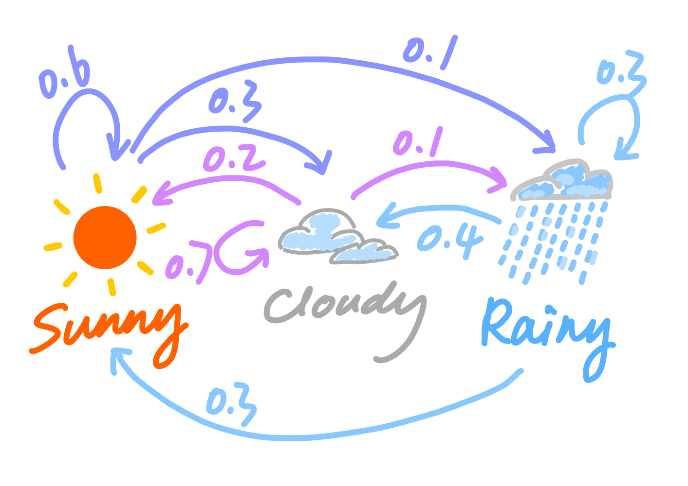
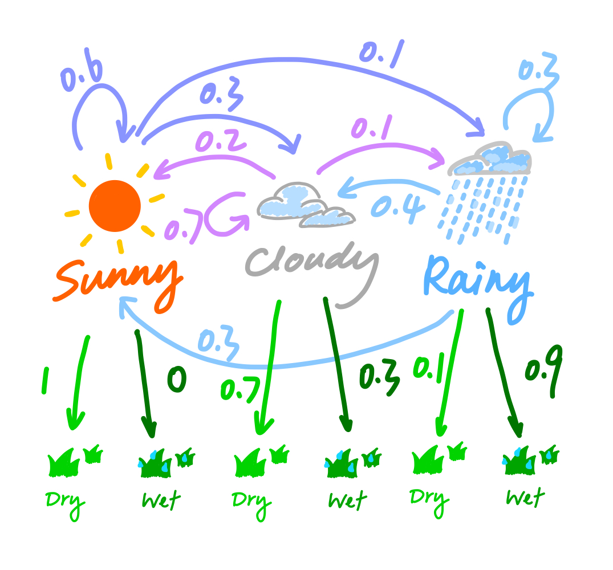

Topic 6 Application 2: Hidden Markov Model
6.1 Overview of Hidden Markov Model
6.1.1 Markov Chain
Markov Chain Intuition
Before formally defining what a Markov chain is, consider this:
Imagine you’re a weather forecaster and you want to predict whether it will be sunny, cloudy, or rainy tomorrow based on the weather conditions of the past few days. Let’s assume that the probability of tomorrow’s weather only depends on today’s weather and not on the weather before that.
Suppose that, if it’s sunny today, there is a 60% chance of it being sunny tomorrow, a 30% chance of it being cloudy, and a 10% chance of it being rainy. \[ \begin{align*} &\mathbb{P}(\text{sunny tmr}\mid \text{sunny today}) = 0.6 \\ &\mathbb{P}(\text{cloudy tmr}\mid \text{sunny today}) = 0.3 \\ &\mathbb{P}(\text{rainy tmr}\mid \text{sunny today}) = 0.1 \\ \end{align*} \] If it’s cloudy today, there is a 20% chance of it being sunny tomorrow, a 70% chance of it still being cloudy, and a 10% chance of it being rainy. \[ \begin{align*} &\mathbb{P}(\text{sunny tmr}\mid \text{cloudy today}) = 0.2 \\ &\mathbb{P}(\text{cloudy tmr}\mid \text{cloudy today}) = 0.7 \\ &\mathbb{P}(\text{rainy tmr}\mid \text{cloudy today}) = 0.1 \\ \end{align*} \] If it’s rainy today, there is a 30% chance of it being sunny tomorrow, a 40% chance of it still being cloudy, and a 30% chance of it being rainy. \[ \begin{align*} &\mathbb{P}(\text{sunny tmr}\mid \text{rainy today}) = 0.3 \\ &\mathbb{P}(\text{cloudy tmr}\mid \text{rainy today}) = 0.4 \\ &\mathbb{P}(\text{rainy tmr}\mid \text{rainy today}) = 0.3 \\ \end{align*} \]

In informal “mathematical” notation, we can represent this as: \[ \text{Weather States} = \{\text{Sunny}, \text{Cloudy}, \text{Rainy}\} \]
\[ \text{Transition Probabilities Matrix} = \begin{bmatrix} 0.6 & 0.3 & 0.1 \\ 0.2 & 0.7 & 0.1 \\ 0.3 & 0.4 & 0.3 \end{bmatrix} \]
In this case (and with our assumptions above), the sequence of the weather states overtime, say {Sunny, Sunny, Sunny, Cloudy, Cloudy, Rainy, Cloudy,…}, is a classic Markov chain. This is because the weather tomorrow only depends on the weather today, or more broadly, the state at time \(t+1\) only depends on the state at time \(t\).
Markov Chain Definition
Mathematically, we can denote a Markov chain by
\[ X=(X_n)_{n\in\mathbb{N}} = (X_0, X_1, X_2,...) \]
where at each timestamp the process takes its values in a discrete set \(E\) such that
\[ X_n \in E \quad \forall n\in \mathbb{N} \]
Then, the Markov property implies that we have \[ \mathbb{P}(X_{n+1}=s_{n+1}\mid X_n = s_n, X_{n-1}=s_{n-1},X_{n-2}=s_{n-2},\cdots) = \mathbb{P}(X_{n+1}=s_{n+1}\mid X_n = s_n) \]
6.1.2 Hidden Markov Model
Hidden Markov Model Intuition
To illustrate Hidden Markov Model, we can continue with the weather example. Let’s assume that we are observing whether the grass is wet or dry every day, but we don’t directly observe the weather. That being said, we only observe the effect of the weather on the grass, and we assume whether the grass is wet or dry only depends on the weather that day.

\[ \text{Weather States} = \{\text{Sunny}, \text{Cloudy}, \text{Rainy}\} \]
\[ \text{Grass States} = \{\text{Dry}, \text{Wet}\} \]
Suppose that, if it’s sunny today, there is a \(100 \%\) chance of observing dry grass, a \(0 \%\) chance of observing wet grass.
\[ \mathbb{P}(\text{dry grass}\mid \text{Sunny}) = 1 \\ \mathbb{P}(\text{wet grass}\mid \text{Sunny}) = 0 \]
Suppose that, if it’s sunny today, there is a \(70 \%\) chance of observing dry grass, a \(30 \%\) chance of observing wet grass.
\[ \mathbb{P}(\text{dry grass}\mid \text{Cloudy}) = 0.7 \\ \mathbb{P}(\text{wet grass}\mid \text{Cloudy}) = 0.3 \]
Suppose that, if it’s rainy today, there is a \(10 \%\) chance of observing dry grass, a \(90 \%\) chance of observing wet grass.
\[ \mathbb{P}(\text{dry grass}\mid \text{Cloudy}) = 0.1 \\ \mathbb{P}(\text{wet grass}\mid \text{Cloudy}) = 0.9 \]
Aggregating the probabilities above into one matrix to get the emission probabilities matrix. \[ \text{Emission Probabilities Matrix} = \begin{bmatrix} 1 & 0 \\ 0.7 & 0.3 \\ 0.1 & 0.9 \end{bmatrix} \]
Hidden Markov Model Definition
A Hidden Markov Model (HMM) is a statistical model that represents a sequence of observable events, \[ Y = (Y_t)_{1\leq t\leq T} = (Y_1, Y_2, ..., Y_T) \]
,where each observation \(Y_t\) is generated by an unknown or hidden state sequence that is a Markov chain \[ X = (X_t)_{1\leq t\leq T} = (X_1, X_2, ..., X_T) \] , which is not directly observed.
Formally, an HMM is defined by the following parameters:
- Hidden states in sequence X take values in a finite set \((h_1,h_2,...,h_N)\).
- Observations in sequence Y take values in a finite set \((o_1,o_2,...,o_M)\).
- An initial probability distribution over the hidden states \(X = (X_t)_{1\leq t\leq T}\), which is given by \(\pi = (\pi_1, \pi_2, ..., \pi_N)\) such that \(\pi_i = \mathbb{P}(X_1 = h_i)\).
- A transition probability matrix \(A_{N\times N}\) = {\(a_{ij}\)}, where entry \(a_{ij}\) represents the probability of transitioning from state \(h_i\) to state \(h_j\). \[ a_{ij} = \mathbb{P}(X_{t+1} = h_j \mid X_{t} = h_i) \]
- An emission probability matrix \(B_{N\times M}\) = {\(b_{j(k)}\)}, where \(b_{jk} = b_{j}(o_k)\) represents the probability of observing the \(o_k\) given that the system is in state \(h_j\). \[ b_{jk} = b_{j}(o_{k}) = \mathbb{P}(Y_t = o_k \mid X_t = h_j) \] The goal of an HMM is to estimate the hidden state sequence X given the observed sequence Y, or to compute the likelihood of the observed sequence Y given the model parameters \((\pi, A, B)\). In fact, we can describe a hidden markov model by \(\theta = (\pi, A, B)\). In the next section, we will apply EM algorithm to estimate parameters of HMM model, which has a specific name – Baum-Welch Algorithm.
6.2 Baum-Welch Algorithm
6.2.1 Intuition
The Baum-Welch algorithm finds a local maximum for \(\theta^{*} = \text{argmax}_{\theta}\mathbb{P}(Y\mid \theta)\). To put it in words, it finds the set of parameters \(\theta^{*}\) that makes the observed sequence \(Y\) mostly likely to have occurred.
6.2.2 Algorithm in steps
Step 1: Initial Guess
Set \(\theta^{t=0} = (A^{t=0}, B^{t=0}, \pi^{t=0})\), where the guesses could be random or not depending on if no prior knowledge is available.
Step 2: Forward-Backward Algorithm
Let’s define some new variables for each observation in the sequence here – the forward probabilities and the backward probabilities.
Definition of forward and backward probabilities
For each observation \(Y_{t} \in Y\), the forward probabilities, denoted as \(\alpha_t(i)\), which represent the probability of \(Y_{t}\) being in state \(o_i\) at time \(t\) given the observations up to time \(t\), \((Y_1, Y_2,...,Y_{t-1})\).
\[ \alpha_t(i) = \mathbb{P}(Y_t = o_i\mid Y_1 = y_1, Y_2 = y_2,...,Y_{t-1} = y_{t-1}) \]
, where \(y = (y_t)_{0<t\leq T}\) is the true observation sequence.
On the other hand, the backward probabilities, denoted as \(\beta_t(i)\), represent the probability of starting from state \(o_i\) at time \(t\) and generating the remaining observations from time \(t+1\) to the end of the sequence, \((Y_{t+1},...,Y_T)\).
\[ \beta_t(i) = \mathbb{P}(Y_t = o_i\mid Y_{t+1} = y_{t+1}, Y_{t+2} = y_{t+2},...,Y_{T} = y_{T}) \]
Computation of forward and backward probabilities
The forward probabilities can be computed using the following recursive formulas: \[ \begin{aligned} \alpha_1(i) &= \pi_i \cdot b_i(y_1), \quad 1\leq i \leq N\\ \alpha_t(i) &= b_i(y_t) \sum_{j=1}^{N} \alpha_{t-1}(j) \cdot a_{ji}, \quad 1\leq i \leq N, \quad 2 \leq t \leq T \\ \end{aligned} \] , where \(N\) is the number of states in the HMM, \(a_{ij}\) is the transition probability from state \(h_i\) to state \(h_j\), \(b_i(y_t)\) is the emission probability of observation \(y_t\) from state \(h_i\), and \(y_t\) is the true observation at time \(t\).
The backward probabilities can be computed using similar recursive formulas: \[ \begin{aligned} \beta_T(i) &= 1, \quad 1\leq i \leq N\\ \beta_t(i) &= \sum_{j=1}^{N} a_{ij} \cdot b_j(y_{t+1}) \cdot \beta_{t+1}(j), \quad 1\leq i \leq N,\quad 1 \leq t \leq T-1 \end{aligned} \] , where \(N\) is the number of states in the HMM, \(a_{ij}\) is the transition probability from state \(h_i\) to state \(h_j\), \(b_i(y_t)\) is the emission probability of observation \(y_t\) from state \(h_i\), and \(y_t\) is the true observation at time \(t\).
Step 3: E-step
Calculate two new sets of quantities:
\(\gamma_t(i)\) represents the probability of the hidden state at time \(t\), \(X_t\), being in state \(h_i\) given the entire observation sequence \(Y=y\) and parameter set \(\theta\), and it can be calculated using Bayes’ theorem.
\[ \begin{aligned} \gamma_t(i) &= \mathbb{P}(X_t = h_i\mid Y = y,\theta) \\ &= \frac{\mathbb{P}(X_t = h_i, Y = y \mid \theta)}{\mathbb{P}(Y=y \mid \theta)} \\ &= \frac{\alpha_t(i)\beta_t(i)}{\sum_{j=1}^{N}\alpha_t(j)\beta_t(j)} \end{aligned} \]
\(\xi_t(i,j)\) represents probability of the hidden state being in state \(h_i\) at time \(t\) and and being in state \(h_j\) at time \(t+1\) given the the entire observation sequence \(Y=y\) and parameter set \(\theta\), and it can also be calculated using the Bayes’ Rule.
\[ \begin{aligned} \xi_t(i,j) &= \mathbb{P}(X_t=h_i, X_{t+1}=h_j\mid Y=y,\theta) \\ &= \frac{\mathbb{P}(X_t = h_i, X_{t+1}=h_j,Y=y\mid \theta)}{\mathbb{P}(Y=y\mid \theta)} \\ &= \frac{\alpha_t(i)a_{ij}\beta_{t+1}(j)b_j(y_{t+1})}{\sum_{k=1}^{N}\sum_{w=1}^{N}\alpha_t(k)a_{kw}\beta_{t+1}(w)b_w(y_{t+1})} \end{aligned} \]
Notice here, that the denominators of \(\gamma_t(i)\) and \(\xi_t(i,j)\) are the same, and it calculates the probability of observing the sequence \(y\) that we observed under our current guess for \(\theta\).
Step 4: M-step
Now, we can update the parameters of the hidden markov model.
First, let’s update the initial probability distribution \(\pi = (\pi_1, \pi_2, ..., \pi_N)\). \[ \begin{aligned} \hat{\pi}_i &= \gamma_1(i) \\ &= \mathbb{P}(X_1 = h_i) \\ \\ \hat{\pi} &= (\gamma_1(1), \gamma_1(2),...,\gamma_1(N)) \\ &= (\mathbb{P}(X_1 = h_1), \mathbb{P}(X_1 = h_2),...,\mathbb{P}(X_1 = h_N)) \\ \end{aligned} \] Next, update the \(a_{ij}\) entry in the transition matrix \(A\) with the expected number of transitions from state \(h_i\) to state \(h_j\) divided by the expected total number of transitions from state \(h_i\) including transitions to itself which equals to the number of times state \(h_i\) appears in the observed sequence \(y\).
\[ \hat{a}_{ij} = \frac{\sum_{t=1}^{T-1}\xi_{t}(i,j)}{\sum_{t=1}^{T-1}\gamma_{t}(i)} \]
Last but not least, update \(b_{ij}\) entry in the emission matrix \(B\) with the expected number of times the output observations have been equal to \(o_j\) under hidden state \(h_i\) over the expected total number of \(h_i\) in the hidden states sequence \(X\).
\[ \hat{b}_i(o_k) = \frac{\sum_{t=1}^{T}1_{y_t = o_k}\gamma_i(t)}{\sum_{t=1}^{T}\gamma_i(t)} \] , where
\[ 1_{y_t = o_k} = \Bigg\{^{ 1 \text{ if y_t = o_k}}_{0 \text{ otherwise}} \]
Step 5: Determine convergence status and repeat iteratively if needed
Set a criteria for whether the estimation sequence is converging and our current guess is close enough to last guess. If not, then repeat from step 2 to step 5 iteratively until convergence.
Alternatively, we can set a maximum number of iteration for the Baum-Welch algorithm, n. Once we have completed n iterations, the algorithm stops and we take the estimates from the last iteration as results.
6.3 Implementation in R
6.3.1 HMM package
HMM package documentation: https://cran.r-project.org/web/packages/HMM/HMM.pdf
Example usage of ‘baumWelch’ function in the HMM package:
# Initialize HMM with states values sets, transition probabilities, and emission probabilities
hmm = initHMM(c("A","B") # hidden states A and B
,c("L","R") # observation states L or R
,startProbs = c(0.5,0.5)
,transProbs=matrix(c(.9,.1,.1,.9),2)
,emissionProbs=matrix(c(.5,.51,.5,.49),2))
# print the HMM we just built to check
print(hmm)## $States
## [1] "A" "B"
##
## $Symbols
## [1] "L" "R"
##
## $startProbs
## A B
## 0.5 0.5
##
## $transProbs
## to
## from A B
## A 0.9 0.1
## B 0.1 0.9
##
## $emissionProbs
## symbols
## states L R
## A 0.50 0.50
## B 0.51 0.49# Sequence of observation
a = sample(c(rep("L",100),rep("R",300)))
b = sample(c(rep("L",300),rep("R",100)))
observation = c(a,b) # append vector b after vector a# Baum-Welch
bw = baumWelch(hmm,observation, maxIteration = 10) # Input: hmm, observation, maxIteration (the maximum number of iterations in the Baum-Welch algorithm)
print(bw$hmm)## $States
## [1] "A" "B"
##
## $Symbols
## [1] "L" "R"
##
## $startProbs
## A B
## 0.5 0.5
##
## $transProbs
## to
## from A B
## A 9.974699e-01 0.00253015
## B 6.670293e-06 0.99999333
##
## $emissionProbs
## symbols
## states L R
## A 0.2464713 0.7535287
## B 0.7486563 0.2513437Notice here that one drawback of the baumWelch function in the HMM package is that it treats the initial probability vector we put in as true initial probability rather than our random guess. Thus, it does not try to update initial probability, which lower the accuracy of the estimation when the initial probability vector we put in is not that accurate.
6.3.2 Revisit Weather-Grass Example
Let’s do a simulation to test the performance of Baum-Welch algorithm here.
# Initialize HMM with states values sets, transition probabilities, and emission probabilities
hmm = initHMM(c("Sunny","Cloudy","Rainy"), # hidden states: WEATHER * 3
c("Dry","Wet"), # observation states: GRASS STATUS * 2
startProbs = c(1/3,1/3,1/3),
transProbs = cbind(c(.6,.2,.3),c(.3,.4,.7),c(.1,.1,.3)),
emissionProbs=rbind(c(1,0),c(.7,.3),c(.1,.9)))
# print the HMM we just built to check
print(hmm)## $States
## [1] "Sunny" "Cloudy" "Rainy"
##
## $Symbols
## [1] "Dry" "Wet"
##
## $startProbs
## Sunny Cloudy Rainy
## 0.3333333 0.3333333 0.3333333
##
## $transProbs
## to
## from Sunny Cloudy Rainy
## Sunny 0.6 0.3 0.1
## Cloudy 0.2 0.4 0.1
## Rainy 0.3 0.7 0.3
##
## $emissionProbs
## symbols
## states Dry Wet
## Sunny 1.0 0.0
## Cloudy 0.7 0.3
## Rainy 0.1 0.9## $States
## [1] "Sunny" "Cloudy" "Rainy"
##
## $Symbols
## [1] "Dry" "Wet"
##
## $startProbs
## Sunny Cloudy Rainy
## 0.3333333 0.3333333 0.3333333
##
## $transProbs
## to
## from Sunny Cloudy Rainy
## Sunny 0.6481263 0.2120997 0.1397740
## Cloudy 0.3535154 0.4445554 0.2019293
## Rainy 0.2973958 0.4071881 0.2954161
##
## $emissionProbs
## symbols
## states Dry Wet
## Sunny 1.0000000 0.0000000
## Cloudy 0.7087220 0.2912780
## Rainy 0.1058077 0.8941923